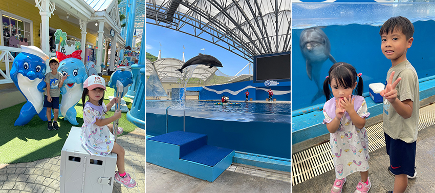
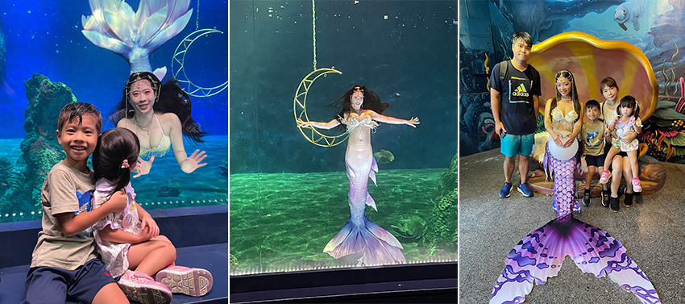
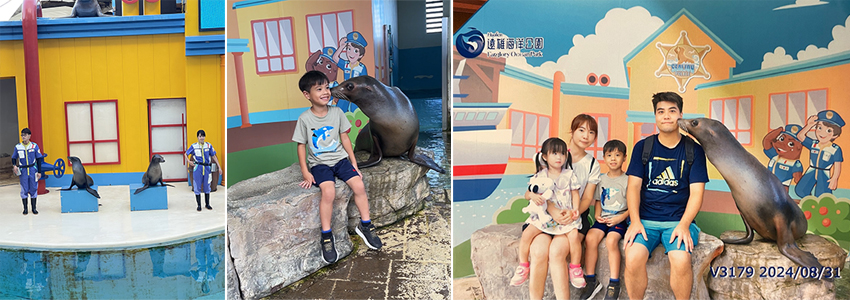
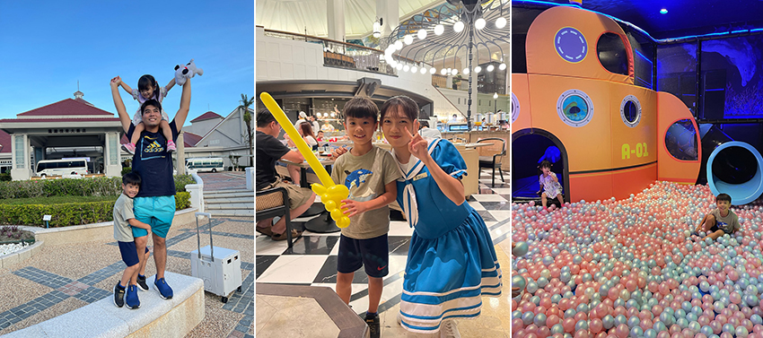

趁著今年振興花蓮的旅遊補助，我們決定安排一趟輕鬆愉快的花蓮之旅，目標是「花蓮遠雄海洋公園」，這裡不僅能滿足孩子們對海洋生物的好奇心，還有豐富多樣的表演和遊樂設施，讓我們全家都能享受其中。這次旅行安排了兩天一夜的行程，選擇住在鄰近海洋公園的「遠雄悅來大飯店」，可以眺望太平洋的壯麗海景，並提供接駁車服務，非常便利。
一早從台北出發，隨著火車一路向東前進，窗外的風景從城市的高樓變成田野、再變成海岸，越靠近花蓮，藍天和大海的交會越來越明顯。孩子們對於車窗外的風景充滿好奇，尤其是看到海時，興奮不已。抵達花蓮火車站後，我們搭上提前預約的飯店接駁車，稍作休息後，便直奔海洋公園。
入園後，我們先去了大家推薦的海洋劇場，正好趕上了一場精彩的海豚表演。海豚們聰明靈活的動作，加上牠們高高躍起劃破水面的瞬間，讓全場觀眾歡呼不已。看著海豚與訓練師們合作無間，不僅能夠做出高難度的翻滾、旋轉，還會應觀眾的掌聲揮動鰭腳，甚至能夠頂著球投籃，讓全場小朋友都笑得合不攏嘴。表演當中訓練師還和觀眾分享了許多關於保護海洋生態的重要資訊，這場表演不僅充滿娛樂性還包含了教育意義，讓我們感受到與大自然和諧共處的深意。
|  |
接著，我們去看了美人魚秀，表演中的美人魚身穿色彩繽紛的魚尾服，隨著音樂在水中優雅地舞動，她們流暢的動作和自然的微笑，讓觀眾感覺到一種輕盈、夢幻的氛圍，猶如置身童話世界。美人魚在水中，不僅僅是游泳，而是進行高難度的動作，像是轉圈、翻滾，甚至是和水中的道具互動。這場秀結合了水下特技和戲劇性的表現，觀眾們看得目不轉睛，仿佛真的見到了傳說中的美人魚，是一場相當令人驚豔的表演。
|  |
我們也不忘體驗各種遊樂設施，海洋公園裡有許多適合家庭同樂的設施，從旋轉木馬到小火車，孩子們玩得不亦樂乎。最讓人驚豔的，是那些設在高處的遊樂設施，乘坐時能俯瞰整個花蓮海岸線，那種視野的開闊和海風的吹拂，讓人覺得心胸也隨之變得寬廣。
當天最令我們印象深刻的，莫過於活潑有趣的海獅表演。海獅們不僅聰明可愛，表演還充滿趣味性，當教練發出指令時，海獅們會以各種滑稽的姿態回應，逗得全場觀眾笑聲不斷。看著海獅擺動著胖胖的身軀，在水中輕盈地跳躍和轉圈，實在讓人忍不住被牠們的幽默感逗樂。看完表演後，我們還參加了一個特別的體驗活動與海獅親密接觸。孩子們排隊期待著，輪到他們的時候，海獅居然主動靠近並在臉頰上輕輕一吻！這個時刻被攝影師捕捉了下來，成為我們這趟旅程中最珍貴的回憶之一。
|  |
結束了一天的遊樂園行程，當晚我們入住了遠雄悅來飯店，在飯店的餐廳享用了豐盛的晚餐，餐廳裡還有大姊姊折氣球送小朋友，這種小巧思真的讓孩子開心不已，吃飽喝足後，到庭園中散步，讓人感到格外寧靜，孩子們則在飯店的遊戲區玩耍，度過了愉快的夜晚。
|  |
隔天，我們再次充滿活力地來到海洋公園，目標是探索水族館。水族館裡展示了許多珍稀的海洋生物，孩子們對於那一大片色彩斑斕的珊瑚礁區域特別著迷。透過巨大的玻璃窗，我們可以看到各種不同的魚類在水中悠遊，孩子們不停地指著玻璃後的海洋生物，眼中閃爍著好奇的光芒。
這趟花蓮海洋公園之旅，讓我們一家收穫滿滿，從豐富的海洋生物展示、精彩的動物表演，到與孩子們一起乘坐遊樂設施、入住舒適的飯店，全家享受了一段愉快而放鬆的時光。這次兩天一夜的短暫旅行，讓我們暫時遠離了城市的忙碌，也讓孩子們對海洋有了更多的了解和體驗豐富的海洋生態。大家不妨趁著『振興花蓮旅遊補助』和『花蓮海洋公園隔日免費入園活動』的優惠，年底前安排一趟花蓮海洋公園之旅，享受這獨特的旅遊體驗。